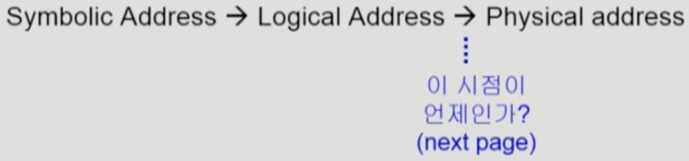
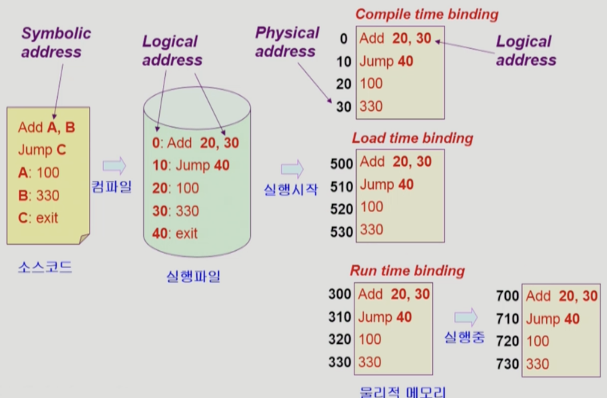
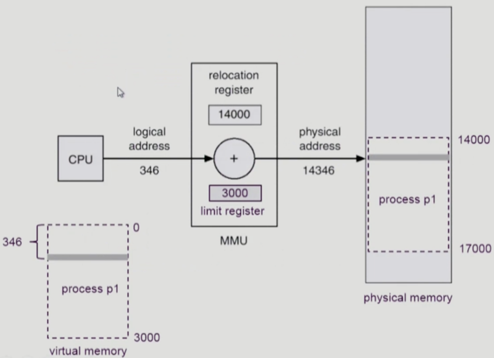
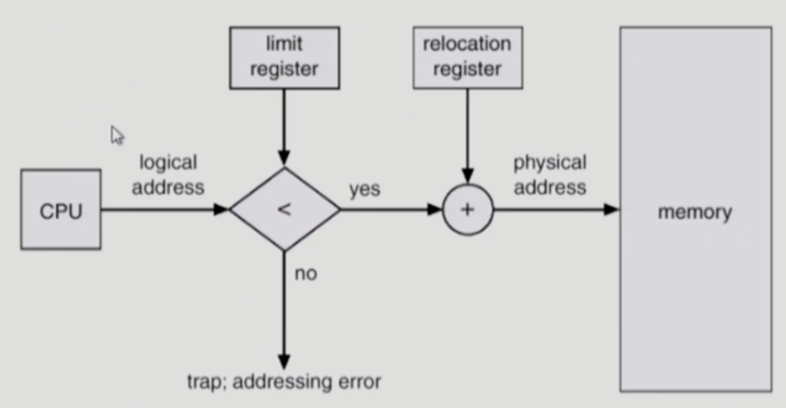
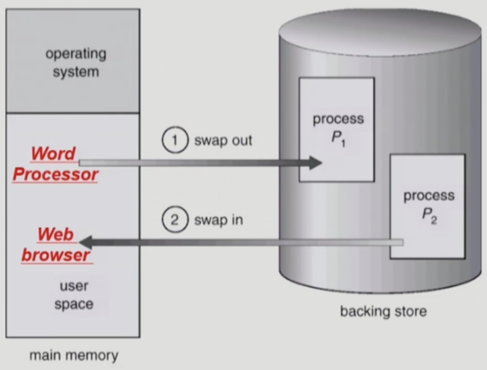

이화여자대학교 컴퓨터공학과 반효경 교수님의 "운영체제 (KOCW)" 강의를 필기한 내용입니다.
다소 잘못된 내용과 구어적 표현 이 포함되어 있을 수 있습니다.
Logical, Physical, Symbolic Address

- Logical Address (Virtual Address): 프로세스 각각이 가지는 가상 주소 공간 속의 주소
- 즉 메모리 전체에 이 프로세스 하나만 올라가있다고 상상했을 때의 주소를 의미한다
- 따라서 메모리 주소는 0번부터 시작
- 이제부터는 별다줄로다가 LA라 표현해보자고
- Physical Address: 실제 메모리의 주소
- 실제 메모리의 주소이기 때문에 하위 주소에는 커널이 들어가고 상위 주소에 유저 프로세스들이 올라가게 된다
- 얘는 PA 라 표현해보자고
- Symbolic Address 라는 것은 코드 작성시에의 변수를 의미하는 것
- 즉, 코드에는 메모리 주소가 아닌 사람이 읽을 수 있는 형태의 문자열인 변수를 사용하게 되는데 이것을 Symbolic Address 라고 하는 것
Address Binding
- Address Binding: LA 를 PA 로 바꾸는 과정
- 메모리에 접근하기 위해서는 LA 가 아니라 PA 가 필요한데 이를 위해 주소 변환 과정이 필요하게 된다
Binding 시점에 따른 분류
- Binding 시점에 따라 종류를 세 가지로 나눠볼 수 있다

- Compile Time Binding: 컴파일 시점에 PA 까지 결정되는 것
- 컴파일 시점에는 SA 가 LA 로 바뀌기 때문에 이때의 주소를 PA로 사용한다는 것은
- 항상 LA와 PA 가 같고
- 프로세스는 항상 (별도의 조치가 없는 한) PA 0번부터 적재되게 된다
- 뭐 당연히 현대의 컴퓨터에서는 사용되지 않았지만 옛날에 컴퓨터에서 하나의 프로세스만 작동되던 시절에는 이런 방식의 바인딩을 사용했다더라
- LA 와 PA 가 같기 때문에 이러한 코드를 Absolute Code(절대 코드) 라고 부르고 컴파일러는 이것을 생성하게 된다
- Load Time Binding: 프로그램이 프로세스가 되어 메모리에 적재되는 시점에 PA 를 결정하는 것
- 얘는 위에놈보다 좀 더 합리적이제
- 메모리 사용 현황은 계속해서 바뀌어서 컴파일 시점에는 메모리의 어느 부분에 적재할지 알기 힘들기 때문에 메모리에 적재할때 LA 와 PA 를 바인딩하자는 개념
- 이때에는 컴파일러가 Relocatable Code (재배치 가능 코드) 를 생성한다
- Runtime Binding: Load Time Binding 과 유사하나 최초에 메모리에 적재된 이후에도 새롭게 바인딩이 될 수 있는 방법
- 이것은 이제 프로세스의 Swapping 을 지원하기 위해 나온 것이다
- 왜냐면 프로세스가 Swap out 되면 디스크로 쫒겨나게 되는데 이후에 다시 Swap in 할 때 기존의 PA 가 아닌 새로운 PA 에 바인딩될 수 있도록 해야 하기 때문
- 당연히 요즘의 운영체제에서는 이 방법을 사용한다
- 프로세스가 시작되고 종료되기 전까지 PA 가 계속 바뀔 수 있으므로 주소 변환 과정을 CPU 가 아닌 MMU 라는 별도의 하드웨어를 이용해 처리한다
CPU 입장에서
- 위 그림을 자세히 보면
- 코드가 적재되는 위치만 바뀌고 코드에 작성되어 있는 주소는 바뀌지 않잖어
- 따라서 CPU가 사용하는 (바라보는) 주소는 LA 이다
- 왜냐하면 코드에 작성되어 있는 주소를 바꾸기 위해서는 컴파일을 새로 해야 되는데 Compile Time Binding 이 아닌 이상 불가능 하기 때문에 코드에 작성되어 있는 주소는 LA 로 놔두고 적재 위치만 바꾸게 되는 것
Memory Management Unit (MMU)

- MMU 는 주소 변환을 해주는 하드웨어 유닛인데
- 다음과 같은 방식으로 작동한다
- 일단 CPU 가 LA 를 이용해 주소를 달라고 요청
- LA 는 무적권 0번부터 시작하기 때문에 LA 가 곧 프로세스 주소 공간의 시작점으로부터의 Offset 을 나타냄 → 프로세스가 적재되어 있는 실제 메모리 상의 시작점의 주소만 알면 여기에 LA 를 더함으로써 PA 를 구할 수 있다
- 이 시작점의 주소는 MMU 내의 Base Register (BA) 혹은 Relocation Register 에 저장된다
- PA 를 알아낸 이후에는 여기에 저장되어 있던 것을 읽어 CPU 로 전달

- 위의 그림이 MMU 의 작동 과정을 나타내는 그림인데
- MMU가 주소 변환을 할 때에는 LA 가 유효한지를 먼저 검사하게 된다
- 왜냐면 만약 프로세스의 주소 공간의 크기가 3000일 때 이것보다 큰 LA 요청이 들어오게 된다면 프로세스 바깥의 주소 공간을 참조하게 되는 것 이므로 다른 프로세스의 주소공간에 무단 침입하는 셈이기 때문이다
- 따라서 MMU 에서는 Limit Register 라는 또 다른 레지스터를 이용해서 프로세스 주소 공간의 크기를 저장해 놓고 이것보다 큰 LA 요청이 들어오면 트랩을 걸어 기각시키게 된다
Dynamic Loading, Overlay
- 일단 Dynamic Loading 이라는 것은 프로세스의 전체가 메모리에 올라가는 것이 아닌 필요한 부분만 올라가는 기법을 의미한다
- 이렇게 하는 이유는 당연히 메모리 효율을 올리기 위함 → 프로그램에는 자주 사용되지 않는 오류 처리 루틴이 많이 포함되어 있기 때문에 프로세스 전체를 올리는 것은 자주 사용하지 않는 부분까지 모두 올리는 것이어서 비효율적이다
- Dynamic Loading 의 정확한 정의는 OS의 힘을 빌리지 않고 메모리에 동적으로 적재되는 것을 뜻한다
- 현대의 OS 에서는 뒤에 나올 페이징 기법을 이용해서 프로세스를 동적으로 메모리에 올리게 되는데 이것은 Dynamic Loading 이 아님
- 하지만 이 용어를 딱히 구별해서 사용하지는 않는다 → 정확한 정의와는 무관하게 페이징 기법을 사용하는 것도 Dynamic Loading 이라고 부르긴 한다
- Overlay 라는 것은 Dynamic Loading 과 유사하지만 용어가 등장한 배경이 좀 다르다
- 일단 Overlay 도 프로세스를 쪼개서 메모리에 올리는 방법이지만
- Overlay 는 메모리의 크기가 너무 작아 프로세스 하나조차 올릴 수 없는 시절에 프로그램을 작성할 때 어느부분을 올릴지 수작업으로 프로그래밍하는 방법을 의미한다
- 하지만 Dynamic Loading 의 경우에는 메모리의 크기는 넉넉하지만 사용율을 높이기 위해 라이브러리의 힘을 빌려서 동적으로 적재하는 것을 일컫는다
Swapping

- 일단 Swapping 이라는 것은 프로세스 전체를 디스크 등의 Backing store 로 쫒아내는 것을 말한다
- 앞선 강의에서 잠깐 언급되었던 것 처럼 Swapping 은 중기 스케줄러 (Mid-term Scheduler, Swapper) 에 의해 어떤 놈이 방출될지 결정된다
- 당연히 우선순위가 높은 놈 보다는 낮은 놈을 방출시키는게 좋겠제 → 이것을 Swapper 가 결정하게 되는 것
- 이 Swapping 은 Runtime Binding 이 필수적이다
- Compile Time Binding 이나 Load Time Binding 의 경우에는 Swap out 되었어도 원래 위치로 되돌아 와야 하기 때문에 비효율적
- Runtime Binding 이 되어야 Swap in 될 때 비어있는 공간으로 쓱 드갈 수 있기 때문에 필수적이다
- Swapping 에서는 읽어들여야 할 데이터의 양이 많기 때문에 대부분 Transfer Time 이 차지한다고 한다
- 이놈은 뒤에 디스크 부분에서 배울거라는데
- 디스크가 데이터를 읽어들일 때는 디스크 헤드가 움직이는 Search Time 하고
- 데이터를 읽어서 보내는 Transfer Time 이 있는데
- 파일입출력같은 경우에는 Transfer Time 보다는 Search Time 이 더 오래 걸리는 반면
- Swapping 의 경우에는 보내야 할 데이터의 양이 많아 Transfer Time 이 더 오래걸린다고 하더라
- 이놈도 페이징 기법과 연루되면서 용어가 좀 모호하게 쓰인다
- 원래는 프로세스 전체가 디스크로 쫒겨나는 것을 의미하지만
- 정확한 정의와 다르게 페이징 기법에 따라 페이지가 쫒겨나는 것도 Swapping 이라고들 하더라
Dynamic Linking
- 일단 Static Linking 이라는 용어부터 알 필요가 있다
- gcc 로 컴파일 할때 보면 라이브러리들을 오브젝트 파일로 만들어서 링크시켜주는 과정을 통해 라이브러리 내에 있던 코드가 내 코드에 포함되도록 하자네
- 이렇게 라이브러리에 있던 코드를 내 코드에 포함시키는 것을 Static Linking 이라고 한다
- 반면에 Dynamic Linking 은 라이브러리 코드를 내 코드에 포함시키지 않고 필요에 따라 불러오는 것을 의미한다
- Dynamic Linking 을 하면 라이브러리 코드는 별도의 코드로 존재하고
- 내가 해당 코드를 사용할 때에는 코드 전체를 가져오는 것이 아니라 해당 코드를 참조할 수 있는 작은 코드 조각 (해당 코드를 가리키는 포인터라고 생각하면 됨 → Stub 이라고 부르더라)을 코드에 넣어서 실행시점에 링크시켜 주는 것을 의미한다
- 리눅스에서
.so파일 본적 있제? 이것이 Dynamic Linking 을 위한 코드이다 → Shared Object 의 약자임 - 윈도우에서는
.dll파일 본 적 있을텐데 이것이 Dynamic Linking Library 의 약자이다